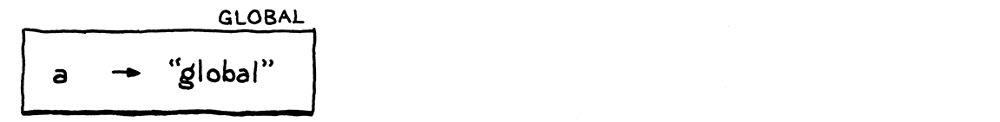
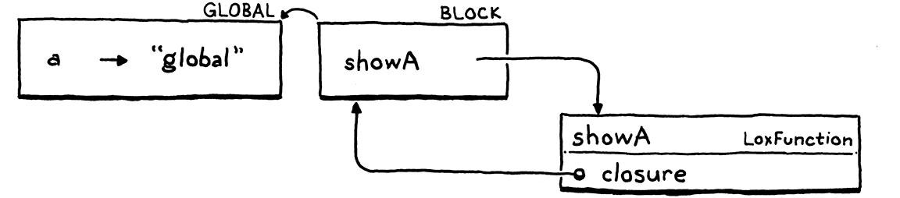
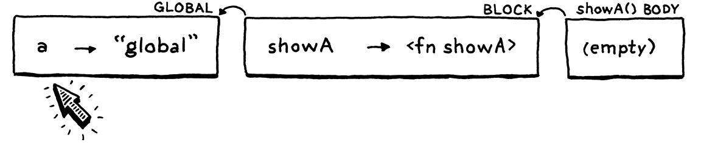
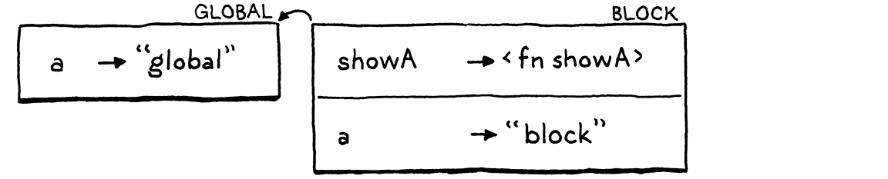
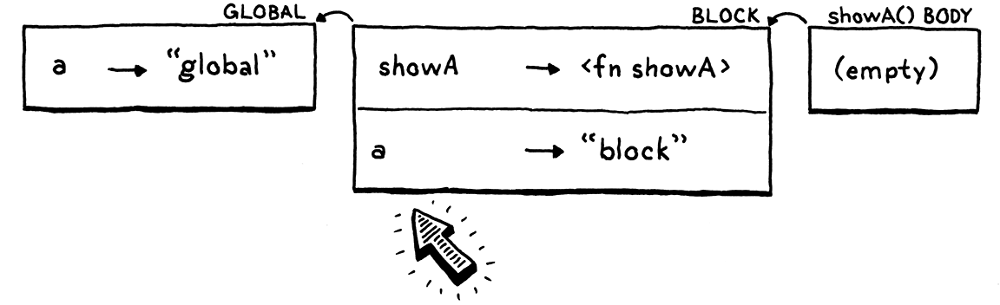
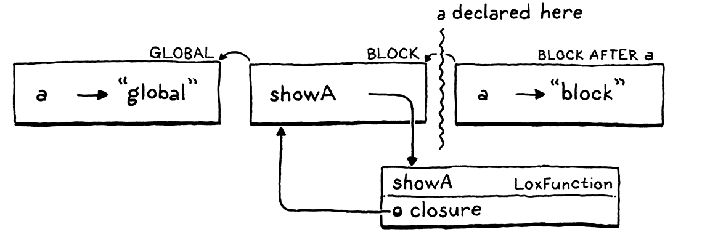

作用域解析与绑定
偶尔你会发现自己陷入了某种古怪的处境。你是一步步、以最自然的方式走进去的； 可当你正身处其中时，却会突然惊愕，问自己这一切究竟是怎么发生的。
托尔·海尔达尔，《孤筏重洋》
哎呀，不好！我们的语言实现进水了！很久以前，我们加入变量和块的时候， 作用域还绷得又紧又严实。可后来我们加入闭包时，我们这个原本滴水不漏的 解释器上破了个洞。真实的程序大多不太可能从这个洞里漏出去，但身为语言实现者，我们 立下过神圣誓言：哪怕在语义最阴暗的角落里，也要在乎正确性。
这一整章，我们都会用来探究那个漏洞，然后小心翼翼地把它补上。在此过程中，我们会更 严谨地理解 Lox 以及承袭 C 传统的其他语言所用的词法作用域。我们还有机会认识语义 分析（semantic analysis）——一种强大的技术，能无需运行代码，就从用户的源码里提炼 出含义。
11 . 1静态作用域
快速回顾一下：Lox 和大多数现代语言一样，采用词法作用域。这意味着，光读一读程序的 文本，你就能弄清一个变量名指的是哪个声明。例如：
var a = "outer"; { var a = "inner"; print a; }
这里我们知道，被打印的 a 是上一行声明的那个变量，而不是全局那个。运行程序并不会
——也不可能——改变这一点。作用域规则属于语言的静态语义，这也是它又叫静态
作用域的原因。
我一直没把这些作用域规则明说出来，但现在是时候讲究一下精确性了：
一个变量用法，指的是在包住该用法的那个最内层作用域里、出现于该用法之前、名字相同的 那个声明。
这句话里能拆的东西不少：
-
我说「变量用法」而不说「变量表达式」，是为了把变量表达式和赋值都涵盖进来。后面 「该变量所用到的那个表达式」同样如此。
-
「出现于它之前」指的是在程序文本里出现在之前。
var a = "outer"; { print a; var a = "inner"; }
这里，被打印的那个
a是外层那个，因为它出现在使用它的print语句之前。大多数情况下，在直线型的代码里，文本上排在前面的 声明，时间上也会先于使用发生。但这并不总是成立。我们将会看到，函数可能把一整块 代码推迟执行，使得它动态的时序执行不再与静态的文本顺序相对应。 -
「最内层」这个词儿，是为了我们的老朋友——遮蔽。包围作用域里可能不止一个变量 用了同一个名字，比如：
var a = "outer"; { var a = "inner"; print a; }
我们的规则靠「最内层的作用域胜出」来消解这种情况的歧义。
既然这条规则完全没提任何运行时行为，那就意味着：在程序的整个执行过程中，一个变量表达式 永远指向同一个声明。到目前为止，我们的解释器大体上正确地实现了这条规则。可当我们 加入闭包时，一个错误悄悄溜了进来。
var a = "global"; { fun showA() { print a; } showA(); var a = "block"; showA(); }
在你把它敲进去、运行之前，先想清楚你认为它应该打印出什么。
好……想好了吗？如果你熟悉其他语言里的闭包，你会指望它打印两遍 “global”。第一次调用
showA() 肯定应该打印 “global”，因为我们那时甚至还没走到内层 a 的声明。而且按照
我们那条「一个变量表达式永远解析到同一个变量」的规则，这就意味着第二次调用 showA()
也应该打印同样的东西。
可惜，它打印出来的是：
global block
我要强调一下：这个程序自始至终没有重新给任何变量赋值，而且只含一条 print 语句。可
不知怎的，那条针对一个从未被赋值的变量的 print 语句，却在不同的时间点打印出了两个
不同的值。我们肯定在哪儿弄坏了什么东西。
11 . 1 . 1作用域与可变环境
在我们的解释器里，环境是静态作用域的动态化身。这两者大体上是同步的——我们进入一个新 作用域时就创建一个新环境，离开作用域时就把它丢弃。我们对环境还执行另一种操作：在某个 环境里绑定一个变量。我们的 bug 正出在这里。
我们来一步步走一遍那个有问题的例子，看看每一步的环境长什么样。首先，我们在全局作用域里
声明 a。

这样我们就得到了一个只含一个变量的环境。接着，我们进入块，执行 showA() 的声明。

我们为这个块得到了一个新环境。在它里面，我们声明了一个名字 showA，绑定到我们为表示
这个函数而创建的 LoxFunction 对象上。那个对象有一个 closure 字段，捕获了函数被声明
时所处的环境，所以它有一个指回该块环境的引用。
现在，我们调用 showA()。

解释器为 showA() 的函数体动态创建了一个新环境。这个环境是空的，因为那个函数没有声明任何
变量。该环境的父环境是这个函数的闭包——也就是外层的块环境。
在 showA() 的函数体内部，我们打印 a 的值。解释器沿着环境链一路查找这个值。它一直
走到全局环境，才在那里找到它并打印出 "global"。很好。
接下来，我们声明第二个 a，这次是在块里面。

它跟 showA() 处在同一个块——同一个作用域里——所以它进了同一个环境，而这个环境也正是
showA() 的闭包所指的那个环境。有趣的地方到了。我们再次调用 showA()。

我们又一次为 showA() 的函数体创建了一个新的空环境，把它跟那个闭包接好，然后运行函数体。
当解释器沿着环境链查找 a 时，它现在会发现块环境里那个新的 a。嘘。
当初实现环境时，我选了一种方式，本希望它能契合你对作用域的那种朴素直觉。我们倾向于 把块里的所有代码都看作处在同一个作用域里，所以我们的解释器就用单个环境来表示它。每个 环境都是一张可变的哈希表。当一个新的局部变量被声明时，它会被加进该作用域已有的那个环境里。
这种直觉，就像人生中许多直觉一样，并不十分正确。一个块并不必然处处都是同一个作用域。 想想看：
{
var a;
// 1.
var b;
// 2.
}
在标了 1 的那一行处，作用域里只有 a。到标了 2 的那一行处，a 和 b 都在了。如果你把一个
「作用域」定义为一组声明，那么这两处显然不是同一个作用域——它们所含的声明并不一样。这
就好像每条 var 语句都把块劈开成了两个独立的作用域：变量声明
之前的那个，以及之后、包含这个新变量的那个。
可在我们的实现里，环境确实表现得像整个块就是同一个作用域，只不过是个随时间变化的作用域。 闭包不喜欢这样。当一个函数被声明时，它捕获的是对当前环境的一个引用。这个函数本应捕获 环境的一份冻结快照——函数被声明那一刻环境的样子。但事实上，在 Java 代码里，它拿到的 是对那个实际可变的环境对象的引用。当后来有一个变量被声明到该环境所对应的那个作用域里时， 闭包就看见了那个新变量，尽管那个声明并不在函数之前。
11 . 1 . 2持久化环境
有一种编程风格会用到所谓的持久化数据结构（persistent data structures）。跟你在命令式 编程里熟悉的那些软塌塌的数据结构不同，持久化数据结构永远不能被直接修改。相反，对既有结构 做的任何一次「修改」，都会产生一个崭新的对象，里面装着原来的全部 数据再加上这次修改。原对象保持不变。
如果我们把这种技术用到 Environment 上，那么你每声明一个变量，都会返回一个新的环境， 里面含有此前声明的所有变量再加上这个新名字。声明一个变量就会完成那次隐式的「劈开」：变量 声明之前有一个环境，之后有一个：

闭包保留一个引用，指向函数被声明时生效的那个 Environment 实例。既然在该块里后来做的任何 声明都会产生新的 Environment 对象，那么闭包就不会看见那些新变量，我们的 bug 也就修好了。
这确实是解决这个问题的一种正当办法，也是 Scheme 解释器里实现环境的经典做法。我们也可以对 Lox 这么做，但那意味着要回头改动一大堆现有代码。
我就不拖着你走那条路了。我们保持环境的表示方式不变。与其让数据变得更静态化，我们不如把 静态的作用域解析直接烘焙进访问操作本身。
11 . 2语义分析
每次求值一个变量表达式时，我们的解释器都会解析这个变量——追查它指的是哪个声明。如果 那个变量被裹在一个运行上千次的循环里，它就会被重新解析上千次。
我们知道，静态作用域意味着一个变量用法永远解析到同一个声明，而这个声明光靠读文本就能确定。 既然如此，我们为什么每次都动态地去做呢？这么做不仅捅出了那个导致恼人 bug 的洞，还毫无必要 地拖慢了速度。
更好的做法是每个变量用法只解析一次。写一段代码，检视用户的程序，找出提到的每一个变量， 并弄清每一个指的是哪个声明。这个过程就是语义分析的一个例子。语法解析器只能告诉你一个 程序在语法上是否正确（一次语法分析），而语义分析则更进一步，开始弄清程序的各个部分究竟 是什么意思。在这个例子里，我们的分析会解析变量的绑定关系。我们不只知道某个表达式是 个变量，还知道它是哪个变量。
存储变量与其声明之间的绑定关系，有很多种办法。等我们做到 Lox 的 C 解释器时，会有一种高效 得多的局部变量存储与访问方式。但对 jlox，我想把对现有代码库造成的连带损伤降到最小。我可 不想把一大堆基本还不错的代码扔掉。
所以，我们会用一种能最大限度利用现有 Environment 类的方式来存储解析结果。回想一下那个有
问题的例子里，对 a 的访问是怎么解释的。
在第一次（正确的）求值里，我们查看了环境链里的三个环境，才找到 a 的全局声明。之后，当
内层的 a 后来在块作用域里被声明时，它遮蔽了全局那个。
下一次查找沿着环境链走，在第二个环境里找到了 a，就在那儿停下。每个环境都对应一个
声明了变量的词法作用域。如果我们能保证一次变量查找永远走过环境链里相同数量的链接，
那就能保证它每次都找到同一个作用域里的同一个变量。
要「解析」一个变量用法，我们只需算出所声明的变量在环境链里隔着多少个「跳」。有意思的问题是 什么时候来做这个计算——或者换个说法，我们要把这段计算的代码塞进解释器实现的哪里？
既然我们计算的是一个基于源码结构的静态属性，那么显而易见的答案就是放在语法解析器里。那是 它传统的归属地，也是我们后来在 clox 里会放它的地方。在这里这么做也行得通，可我想找个由头 给你展示另一种技术。我们会把作用域解析器写成一个独立的 pass。
11 . 2 . 1一趟变量作用域解析
在语法解析器产出语法树之后、解释器开始执行它之前，我们会把树遍历一趟，解析出其中所有的变量。 在语法解析和执行之间加上额外的 pass 是常见做法。如果 Lox 有静态类型，我们可以在那儿插进一个 类型检查器。优化也常常像这样用独立的 pass 来实现。基本上，任何不依赖只在运行时才有的状态的 工作，都能以这种方式来完成。
我们这趟变量作用域解析，运作起来有点像一个小小的解释器。它遍历这棵树，访问每一个节点，但 静态分析跟动态执行是不同的：
-
没有副作用。 当静态分析访问一条 print 语句时，它并不会真的打印任何东西。对原生函数 的调用、或者其他伸向外部世界的操作，都被替换成空桩，不产生任何效果。
-
没有控制流。 循环只会被访问一次。
if语句的两个分支都会被 访问。逻辑运算符不会被短路。
11 . 3作用域解析器类
就像 Java 里的一切那样，我们的这趟变量作用域解析也体现在一个类里。
新建文件
package com.craftinginterpreters.lox; import java.util.HashMap; import java.util.List; import java.util.Map; import java.util.Stack; class Resolver implements Expr.Visitor<Void>, Stmt.Visitor<Void> { private final Interpreter interpreter; Resolver(Interpreter interpreter) { this.interpreter = interpreter; } }
由于作用域解析器需要访问语法树里的每一个节点，它实现了我们现有的那套访问者抽象。在解析 变量这件事上，只有少数几类节点值得关注：
-
块语句为它所包含的语句引入一个新作用域。
-
函数声明为它的函数体引入一个新作用域，并在这个作用域里绑定它的形参。
-
变量声明把一个新变量加进当前作用域。
-
变量表达式和赋值表达式需要解析它们的变量。
其余的节点不做任何特别的事，但我们仍然需要为它们实现 visit 方法，好钻进它们的子树里。尽管
一个 + 表达式本身没有任何变量需要解析，它的任一操作数却可能有。
11 . 3 . 1解析块
我们从块开始，因为正是块创建了那些让一切魔法得以发生的局部作用域。
加在 Resolver() 之后
@Override public Void visitBlockStmt(Stmt.Block stmt) { beginScope(); resolve(stmt.statements); endScope(); return null; }
这个方法会开启一个新作用域，深入到块里面的那些语句，然后丢弃这个作用域。好玩的东西都在那几个 辅助方法里。我们从最简单的那个开始。
加在 Resolver() 之后
void resolve(List<Stmt> statements) { for (Stmt statement : statements) { resolve(statement); } }
这个方法遍历一个语句列表，逐一解析每个语句。接着又转而调用：
加在 visitBlockStmt() 之后
private void resolve(Stmt stmt) { stmt.accept(this); }
既然来了，我们再加一个重载，之后解析表达式时会用得上。
加在 resolve(Stmt stmt) 之后
private void resolve(Expr expr) { expr.accept(this); }
这些方法跟 Interpreter 里的 evaluate() 和 execute() 很像——它们同样是对给定的
语法树节点套用访问者模式。
真正有意思的行为都围绕着作用域。一个新的块作用域是这样创建的：
加在 resolve() 之后
private void beginScope() { scopes.push(new HashMap<String, Boolean>()); }
在解释器和作用域解析器里，词法作用域都是嵌套的。它们表现得像一座栈。解释器用一条链表 ——Environment 对象链——来实现那座栈。而在作用域解析器里，我们用的是一个货真价实的 Java Stack。
private final Interpreter interpreter;
在类 Resolver 内
private final Stack<Map<String, Boolean>> scopes = new Stack<>();
Resolver(Interpreter interpreter) {
这个字段追踪的，是当前、呃，处于作用域内的那座作用域栈。栈里的每个元素是一个 Map，代表 单独一个块作用域。键跟在 Environment 里一样，是变量名。值是布尔值，原因我很快会解释。
这座作用域栈只用于局部的块作用域。在顶层、也就是全局作用域里声明的变量，不被作用域解析器 追踪，因为它们在 Lox 里更加动态。解析一个变量时，如果我们在局部作用域栈里找不到它，就假定 它必定是全局的。
既然作用域存在一座显式的栈里，退出一个作用域就很直接。
加在 beginScope() 之后
private void endScope() { scopes.pop(); }
现在我们能压入、弹出由空作用域组成的栈了。往里面放点东西吧。
11 . 3 . 2解析变量声明
解析一个变量声明，就是往当前最内层作用域的 map 里加一个新条目。看着挺简单，可我们得跳一段 小小的舞步。
加在 visitBlockStmt() 之后
@Override public Void visitVarStmt(Stmt.Var stmt) { declare(stmt.name); if (stmt.initializer != null) { resolve(stmt.initializer); } define(stmt.name); return null; }
我们把绑定拆成两步——先声明、后定义——是为了处理像这样的古怪边角情况：
var a = "outer"; { var a = a; }
当一个局部变量的初始化器引用了一个跟正在声明的变量同名的变量时，会发生什么？我们有几个选项：
-
先运行初始化器，再把新变量放进作用域。 这样一来，新的局部
a会被初始化为 “outer”， 也就是那个全局变量的值。换句话说，上面这段声明会被脱糖成：var temp = a; // 运行初始化器。 var a; // 声明这个变量。 a = temp; // 初始化它。
-
先把新变量放进作用域，再运行初始化器。 这意味着你可以在一个变量被初始化之前就观察到 它，所以我们得弄清它那时会是什么值。大概是
nil。这意味着新的局部a会被重新初始化 成它自身的隐式初始值nil。这时脱糖出来是这样的：var a; // 定义这个变量。 a = a; // 运行初始化器。
-
把「在初始化器里引用该变量」变成错误。 只要初始化器提到了正在初始化的那个变量， 就让解释器在编译期或运行时失败。
前两个选项里，有哪一个看起来像是用户真的想要的？遮蔽很少见，而且往往就是个错误， 所以拿被遮蔽变量的值来初始化那个遮蔽变量，不大可能是故意的。
第二个选项更没用。那个新变量永远会是 nil 值。按名字提它从来就没有任何意义。你大可以
直接写个 nil。
既然前两个选项很可能掩盖用户的错误，我们就选第三个。而且，我们要把它做成编译期错误而不是 运行时错误。这样一来，用户在任何代码跑起来之前就会收到提醒。
为了做到这一点，我们在访问表达式时，需要知道自己是不是正处在某个变量的初始化器里。我们 通过把绑定拆成两步来做到这一点。第一步是声明它。
加在 endScope() 之后
private void declare(Token name) { if (scopes.isEmpty()) return; Map<String, Boolean> scope = scopes.peek(); scope.put(name.lexeme, false); }
声明把变量加进最内层的作用域，好让它遮蔽任何外层同名变量，也好让我们知道这个变量存在。
我们通过把它的名字绑定到作用域 map 里的 false，来标记它「还没准备好」。作用域 map 里跟
某个键关联的值，表示我们是否已经完成了解析那个变量的初始化器。
声明完变量之后，我们在同一个作用域里解析它的初始化器表达式——此时这个新变量已经存在，但还 不可用。一旦初始化器表达式解析完毕，这个变量就准备好正式上场了。我们通过定义它来做到 这一点。
加在 declare() 之后
private void define(Token name) { if (scopes.isEmpty()) return; scopes.peek().put(name.lexeme, true); }
我们把作用域 map 里那个变量的值设成 true，标记它已完全初始化、可供使用了。它活了！
11 . 3 . 3解析变量表达式
变量声明——以及我们稍后会讲到的函数声明——会写入作用域 map。当我们解析变量表达式时，读的 就是这些 map。
加在 visitVarStmt() 之后
@Override public Void visitVariableExpr(Expr.Variable expr) { if (!scopes.isEmpty() && scopes.peek().get(expr.name.lexeme) == Boolean.FALSE) { Lox.error(expr.name, "Can't read local variable in its own initializer."); } resolveLocal(expr, expr.name); return null; }
首先，我们检查这个变量是不是正在它自己的初始化器里被访问。作用域 map 里的那些值就是在这儿
派上用场的。如果这个变量存在于当前作用域、但它的值是 false，那就意味着我们已经声明了它、
却还没定义它。我们报告这个错误。
检查之后，我们用下面这个辅助方法真正解析这个变量本身：
加在 define() 之后
private void resolveLocal(Expr expr, Token name) { for (int i = scopes.size() - 1; i >= 0; i--) { if (scopes.get(i).containsKey(name.lexeme)) { interpreter.resolve(expr, scopes.size() - 1 - i); return; } } }
这段代码看着很像 Environment 里求值变量时的那段，这是有道理的。我们从最内层作用域开始，向 外一层层找，在每个 map 里找相匹配的名字。如果找到了这个变量，我们就解析它，并传入一个数： 从当前最内层作用域到找到该变量的那个作用域之间隔了多少个作用域。所以，如果变量是在当前 作用域里找到的，我们传 0。如果它在紧挨着的外层作用域里，就传 1。道理你懂的。
如果我们走遍所有的块作用域都没找到这个变量，我们就把它搁置不解析，并假定它是全局的。稍后
我们会讲到那个 resolve() 方法的实现。眼下，我们继续把其余的语法节点啃完。
11 . 3 . 4解析赋值表达式
另一种引用变量的表达式是赋值。解析一个赋值表达式长这样：
加在 visitVarStmt() 之后
@Override public Void visitAssignExpr(Expr.Assign expr) { resolve(expr.value); resolveLocal(expr, expr.name); return null; }
首先，我们解析被赋的那个值的表达式，以防它里面也引用了别的变量。然后我们用现成的
resolveLocal() 方法来解析被赋值的那个变量。
11 . 3 . 5解析函数声明
最后是函数。函数既绑定名字，又引入作用域。函数自身的名字，绑定在函数被声明处的那个外围 作用域里。当我们踏入函数体时，我们又把它的形参绑定进那个内层的函数作用域。
加在 visitBlockStmt() 之后
@Override public Void visitFunctionStmt(Stmt.Function stmt) { declare(stmt.name); define(stmt.name); resolveFunction(stmt); return null; }
跟 visitVariableStmt() 类似，我们在当前作用域里声明并定义函数的名字。不过跟变量不同的
是，我们是急切地定义这个名字的——在解析函数体之前就定义。这让一个函数能在自己的函数体
内部递归地引用自己。
接着我们用下面这个来解析函数的函数体：
加在 resolve() 之后
private void resolveFunction(Stmt.Function function) { beginScope(); for (Token param : function.params) { declare(param); define(param); } resolve(function.body); endScope(); }
这个方法之所以单独拎出来，是因为等我们之后加入类的时候，也会用它来解析 Lox 的方法。它为 函数体创建一个新作用域，然后为函数的每一个形参绑定变量。
这个作用域一准备好，我们就立刻在那个作用域里解析函数体。这跟解释器处理函数声明的方式不一样。 在运行时，声明一个函数并不会碰它的函数体。函数体要等到之后函数被调用时才会 被碰。而在一次静态分析里，我们当场就立刻深入函数体。
11 . 3 . 6解析其余的语法树节点
文法中那些有意思的角角落落就都覆盖到了。我们处理了变量被声明、被读取、被写入的每一个地方， 也处理了作用域被创建、被销毁的每一个地方。尽管其余的语法树节点不受变量作用域解析的影响， 我们仍然需要为它们全都实现 visit 方法，好递归进入它们的子树。抱歉， 这一段有点枯燥，但请忍耐一下。我们会大致「自上而下」地走，先从语句开始。
一条表达式语句含有一个需要遍历的表达式。
加在 visitBlockStmt() 之后
@Override public Void visitExpressionStmt(Stmt.Expression stmt) { resolve(stmt.expression); return null; }
一条 if 语句有一个表示条件的表达式，以及一个或两个表示分支的语句。
加在 visitFunctionStmt() 之后
@Override public Void visitIfStmt(Stmt.If stmt) { resolve(stmt.condition); resolve(stmt.thenBranch); if (stmt.elseBranch != null) resolve(stmt.elseBranch); return null; }
在这里，我们看到作用域解析跟解释有何不同。当我们解析一条 if 语句时，没有控制流。我们会
解析条件以及两个分支。动态执行只会踏进那个确实被运行的分支，而静态分析是保守的——
它会分析任何可能被运行的分支。既然两个分支中任何一个都可能在运行时被抵达，我们就两个
都解析。
跟表达式语句一样，一条 print 语句含有一个子表达式。
加在 visitIfStmt() 之后
@Override public Void visitPrintStmt(Stmt.Print stmt) { resolve(stmt.expression); return null; }
return 也是同样的情况。
加在 visitPrintStmt() 之后
@Override public Void visitReturnStmt(Stmt.Return stmt) { if (stmt.value != null) { resolve(stmt.value); } return null; }
跟 if 语句里一样，对一条 while 语句，我们解析它的条件，并恰好解析一遍它的循环体。
加在 visitVarStmt() 之后
@Override public Void visitWhileStmt(Stmt.While stmt) { resolve(stmt.condition); resolve(stmt.body); return null; }
所有的语句就都覆盖完了。接下来是表达式……
我们的老朋友，二元表达式。我们深入进去，解析它的两个操作数。
加在 visitAssignExpr() 之后
@Override public Void visitBinaryExpr(Expr.Binary expr) { resolve(expr.left); resolve(expr.right); return null; }
调用也类似——我们遍历实参列表，把它们全都解析一遍。被调用的那个东西本身也是一个表达式 （通常是个变量表达式），所以它也会被解析。
加在 visitBinaryExpr() 之后
@Override public Void visitCallExpr(Expr.Call expr) { resolve(expr.callee); for (Expr argument : expr.arguments) { resolve(argument); } return null; }
圆括号很简单。
加在 visitCallExpr() 之后
@Override public Void visitGroupingExpr(Expr.Grouping expr) { resolve(expr.expression); return null; }
字面量最简单不过了。
加在 visitGroupingExpr() 之后
@Override public Void visitLiteralExpr(Expr.Literal expr) { return null; }
一个字面量表达式不提任何变量，也不含任何子表达式，所以没什么可做的。
既然静态分析不做控制流、也不做短路，那么逻辑表达式就跟其他二元运算符完全一样。
加在 visitLiteralExpr() 之后
@Override public Void visitLogicalExpr(Expr.Logical expr) { resolve(expr.left); resolve(expr.right); return null; }
最后，最后一个节点。我们解析它的那一个操作数。
加在 visitLogicalExpr() 之后
@Override public Void visitUnaryExpr(Expr.Unary expr) { resolve(expr.right); return null; }
有了所有这些 visit 方法，Java 编译器就该满意地认为 Resolver 完整实现了 Stmt.Visitor 和 Expr.Visitor 了。现在是歇一歇、吃口零食、也许打个盹儿的好时机。
11 . 4解释已解析的变量
来看看我们这作用域解析器有啥用。每当作用域解析器访问一个变量，都会告诉解释器：当前作用域和定义该 变量的那个作用域之间隔了多少个作用域。在运行时，这恰好对应着当前环境与那个能让解释器找到 变量值的外围环境之间隔了多少个环境。作用域解析器通过调用下面这个，把这个数交给解释器：
加在 execute() 之后
void resolve(Expr expr, int depth) { locals.put(expr, depth); }
我们想把这些解析信息存到某处，好在之后那个变量或赋值表达式被执行时用得上，可存哪儿呢？ 一个显而易见的地方就是语法树节点本身。那是个不错的做法，许多编译器就把这类分析的结果存在 那里。
我们可以那么干，但那需要去折腾我们的语法树生成器。所以我们改用另一种常见的做法，把它存到 一旁的一张 map 里，让每个语法树节点跟它的解析数据关联起来。
像 IDE 这样的交互式工具，常常会增量地重新做语法解析、重新做作用域解析，只处理用户程序的 一部分。当那些需要 重算的状态藏在语法树的枝枝叶叶里时，想把它们全都找出来可能很难。把这份数据存在节点之外的 一个好处是，这让丢弃它变得很容易——清空那张 map 就行了。
private Environment environment = globals;
在类 Interpreter 内
private final Map<Expr, Integer> locals = new HashMap<>();
Interpreter() {
你也许会以为，当有多个表达式引用同一个变量时，我们需要某种嵌套的树结构来避免混淆，但每个 表达式节点都是它自己的 Java 对象，各有各的独立身份。一张单一的、铁板一块的 map 毫无困难 就能把它们区分开。
一如既往，使用一个集合需要我们 import 几个名字。
import java.util.ArrayList;
import java.util.HashMap;
import java.util.List;
还有：
import java.util.List;
import java.util.Map;
class Interpreter implements Expr.Visitor<Object>,
11 . 4 . 1访问已解析的变量
我们的解释器现在能拿到每个变量解析出来的位置了。终于，我们能用上它了。我们把变量表达式的 visit 方法换成这个：
public Object visitVariableExpr(Expr.Variable expr) {
在 visitVariableExpr() 内
替换 1 行
return lookUpVariable(expr.name, expr);
}
它委托给：
加在 visitVariableExpr() 之后
private Object lookUpVariable(Token name, Expr expr) { Integer distance = locals.get(expr); if (distance != null) { return environment.getAt(distance, name.lexeme); } else { return globals.get(name); } }
这里有几件事在进行。首先，我们在 map 里查找解析出来的距离。记住，我们只解析了局部变量。
全局变量受到特殊对待，最终不进这张 map（locals 这个名字就是这么来的）。所以，如果我们在
map 里找不到距离，那它就必定是全局的。这种情况下，我们直接到全局环境里动态地查找它。如果
该变量没有定义，那就会抛出一个运行时错误。
如果确实拿到了一个距离，那就说明我们面对的是一个局部变量，于是我们就可以享用静态分析
的成果了。我们不调用 get()，而是调用 Environment 上这个新方法：
加在 define() 之后
Object getAt(int distance, String name) { return ancestor(distance).values.get(name); }
旧的 get() 方法会动态地沿着一串外围环境往下走，挨个翻找，看变量是不是藏在某处。但现在
我们确切地知道链里哪一个环境会有这个变量。我们用下面这个辅助方法抵达它：
加在 define() 之后
Environment ancestor(int distance) { Environment environment = this; for (int i = 0; i < distance; i++) { environment = environment.enclosing; } return environment; }
这个方法沿着父链向上走固定数量的跳，返回那里的环境。拿到它之后，getAt() 就只是返回那个
环境 map 里该变量的值。它甚至连变量在不在那儿都不必检查——我们知道它一定在，因为作用域
解析器早先已经找到过它了。
11 . 4 . 2给已解析的变量赋值
我们也能通过给变量赋值来使用它。访问赋值表达式那一处的改动与之类似。
public Object visitAssignExpr(Expr.Assign expr) {
Object value = evaluate(expr.value);
在 visitAssignExpr() 内
替换 1 行
Integer distance = locals.get(expr);
if (distance != null) {
environment.assignAt(distance, expr.name, value);
} else {
globals.assign(expr.name, value);
}
return value;
我们又一次查找该变量的作用域距离。如果找不到，就假定它是全局的，并像之前那样处理。否则， 我们调用这个新方法：
加在 getAt() 之后
void assignAt(int distance, Token name, Object value) { ancestor(distance).values.put(name.lexeme, value); }
assignAt() 之于 assign()，正如 getAt() 之于 get()。这个方法走过固定数量的环境，
然后把新值塞进那张 map 里。
这就是对 Interpreter 的全部改动。正因如此，我才为我们的解析数据选了一种侵入性最小的表示 方式。其余的节点全都照旧工作。连修改环境的代码都没有变。
11 . 4 . 3运行作用域解析器
不过，我们确实需要真正运行作用域解析器。我们在语法解析器施展完魔法之后插入这个新 pass。
// 有语法错误就停下。
if (hadError) return;
在 run() 内
Resolver resolver = new Resolver(interpreter); resolver.resolve(statements);
interpreter.interpret(statements);
只要有任何语法解析错误，我们就不运行作用域解析器。如果代码有语法错误，它根本不会运行，所以 解析它没什么价值。如果语法没问题，我们就让作用域解析器去干它的事。作用域解析器持有对解释器 的一个引用，并在遍历变量时把解析数据直接戳进解释器里。等解释器下一次运行时，它该有的东西就 都有了。
至少，在作用域解析器成功的前提下是这样。可要是解析过程中出错呢？
11 . 5作用域解析错误
既然我们在做一趟语义分析，就有机会让 Lox 的语义更精确，并帮用户在他们代码跑起来之前尽早 抓到 bug。瞧瞧这个坏家伙：
fun bad() { var a = "first"; var a = "second"; }
在全局作用域里，我们确实允许声明多个同名的变量，但在局部作用域里这么做，多半是个错误。
要是他们知道这个变量已经存在，就会去给它赋值、而不是用 var 再声明一遍。而要是他们不
知道它已存在，那他们大概也没打算覆盖前一个。
我们可以在解析时静态地检测出这个错误。
Map<String, Boolean> scope = scopes.peek();
在 declare() 内
if (scope.containsKey(name.lexeme)) { Lox.error(name, "Already a variable with this name in this scope."); }
scope.put(name.lexeme, false);
当我们在一个局部作用域里声明一个变量时，我们已经知道同一个作用域里此前声明过的每一个变量的 名字。如果我们看到一次撞名，就报告一个错误。
11 . 5 . 1非法的 return 错误
下面是另一个讨厌的小脚本：
return "at top level";
它执行的是一条 return 语句，可它压根就不在任何函数里面。它是顶层代码。我不知道用户以为
会发生什么，但我觉得我们不会想让 Lox 允许这种事。
我们可以扩展作用域解析器，来静态地检测出它。就像我们遍历树时追踪作用域那样，我们也可以追踪 我们当前正在访问的代码是不是在一个函数声明里面。
private final Stack<Map<String, Boolean>> scopes = new Stack<>();
在类 Resolver 内
private FunctionType currentFunction = FunctionType.NONE;
Resolver(Interpreter interpreter) {
我们不使用光秃秃的布尔值，而是用这个滑稽的枚举：
加在 Resolver() 之后
private enum FunctionType { NONE, FUNCTION }
它现在看起来有点蠢，但之后我们会给它加上几个更多的情形，那时它就会更有道理了。当我们解析 一个函数声明时，我们把这个传进去。
define(stmt.name);
在 visitFunctionStmt() 内
替换 1 行
resolveFunction(stmt, FunctionType.FUNCTION);
return null;
在 resolveFunction() 里，我们接收那个参数，并在解析函数体之前把它存进字段。
在method resolveFunction() 内
替换 1 行
private void resolveFunction( Stmt.Function function, FunctionType type) { FunctionType enclosingFunction = currentFunction; currentFunction = type;
beginScope();
我们先把该字段之前的值存进一个局部变量里。记住，Lox 有局部函数，所以你可以把函数声明嵌套到 任意深度。我们需要追踪的不只是「我们在某个函数里」，而是「我们在多少层函数里」。
为此我们可以用一座显式的、装着 FunctionType 值的栈，但我们要搭 JVM 的便车。我们把这个 之前的值存进 Java 栈上的一个局部变量里。等我们解析完函数体后，再把字段恢复成那个值。
endScope();
在 resolveFunction() 内
currentFunction = enclosingFunction;
}
既然我们现在总能说出自己是不是在一个函数声明里面，那我们在解析一条 return 语句时就检查这
一点。
public Void visitReturnStmt(Stmt.Return stmt) {
在 visitReturnStmt() 内
if (currentFunction == FunctionType.NONE) { Lox.error(stmt.keyword, "Can't return from top-level code."); }
if (stmt.value != null) {
不错吧？
还有最后一块。回到那个把一切缝合起来的 Lox 主类里，我们小心地做到了：只要遇到任何语法解析 错误，就不运行解释器。那次检查在作用域解析器之前运行，好让我们不去尝试解析语法上非法的 代码。
但如果存在作用域解析错误，我们也需要跳过解释器，所以我们加上另一个检查。
resolver.resolve(statements);
在 run() 内
// 有解析错误就停下。 if (hadError) return;
interpreter.interpret(statements);
你可以设想在这里做许多别的分析。比如，如果我们给 Lox 加上 break 语句，我们多半会想确保
它们只在循环内部使用。
我们还可以更进一步，对那些未必错误、但大概没用的代码报告警告。比如，如果你在一条
return 语句之后有不可达的代码、或者有一个值从未被读取过的局部变量，许多 IDE 都会发出警告。
所有这些都是相当容易加到我们这趟静态访问里的，或者拆成独立的 pass。
不过眼下，我们就用这么多分析，不再多了。要紧的是，我们修好了那个古怪又恼人的边角情况 bug ——考虑到为它花了这么大功夫，你也许会感到惊讶。
习题
-
为什么可以安全地急切定义那个绑定到函数名的变量，而其他变量却必须等到初始化之后才能被 使用？
-
你了解的其他语言是怎么处理这种局部变量的——它在自己的初始化器里引用了同名的变量，比如：
var a = "outer"; { var a = a; }
它是运行时错误吗？编译错误？还是允许这么做？它们对待全局变量的方式不同吗？你认同它们的 选择吗？说说你的理由。
-
扩展作用域解析器，让它在某个局部变量从未被使用时报告一个错误。
-
我们的作用域解析器算出了变量是在哪个环境里被找到的，但它在那张 map 里仍然是按名字 查找的。一种更高效的环境表示方式会把局部变量存在一个数组里，按索引来查找它们。
扩展作用域解析器，给在一个作用域里声明的每个局部变量关联一个唯一索引。解析一次变量访问 时，既查出变量所在的作用域、又查出它的索引，并把两者都存下来。在解释器里，用这个来按 索引快速访问变量，而不是用 map。